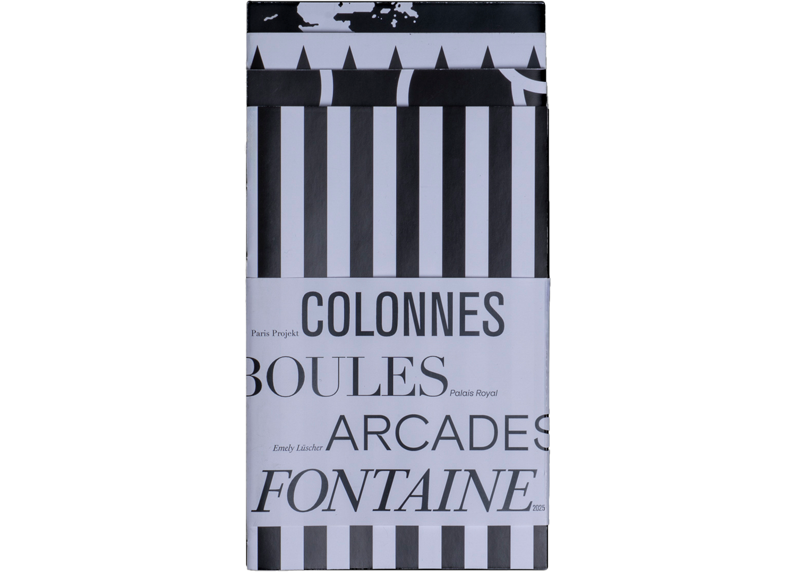
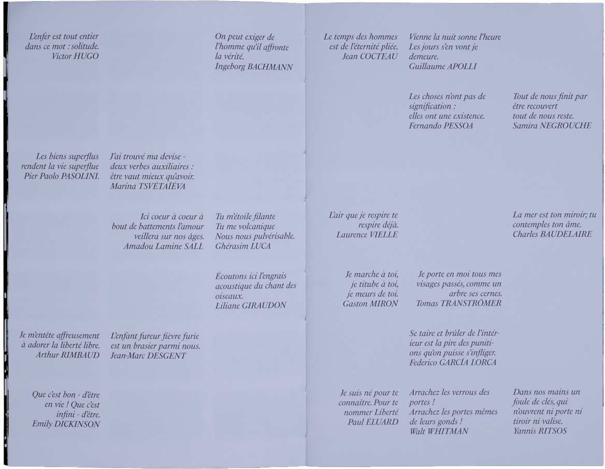
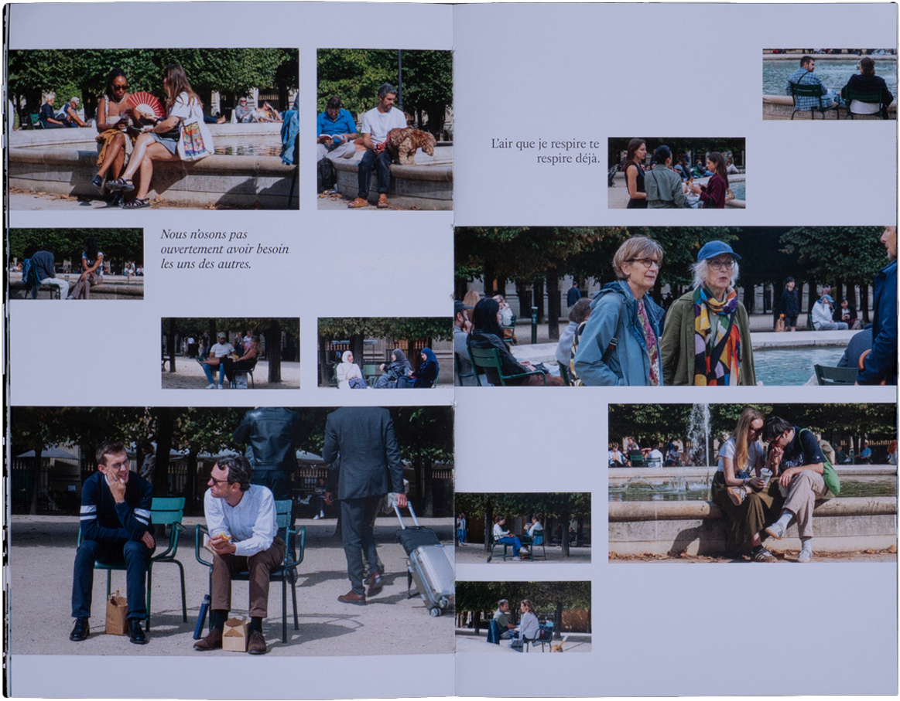
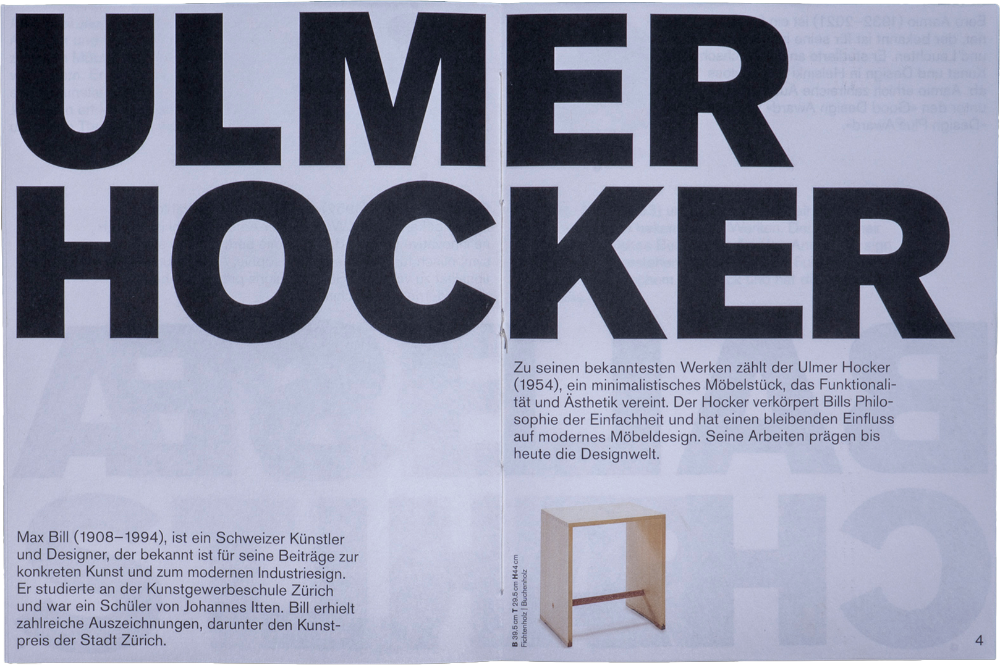
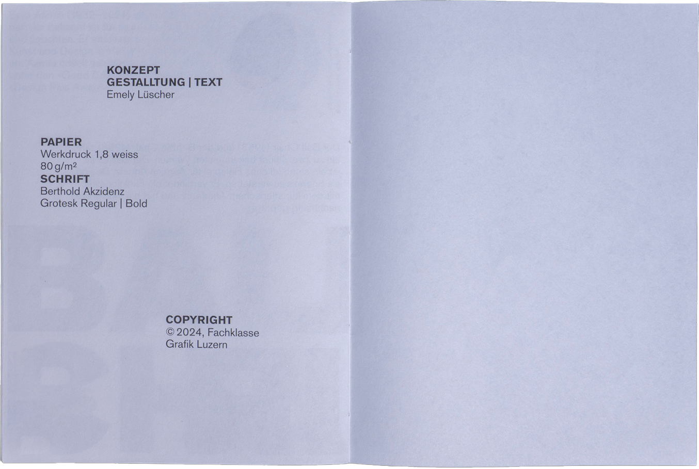
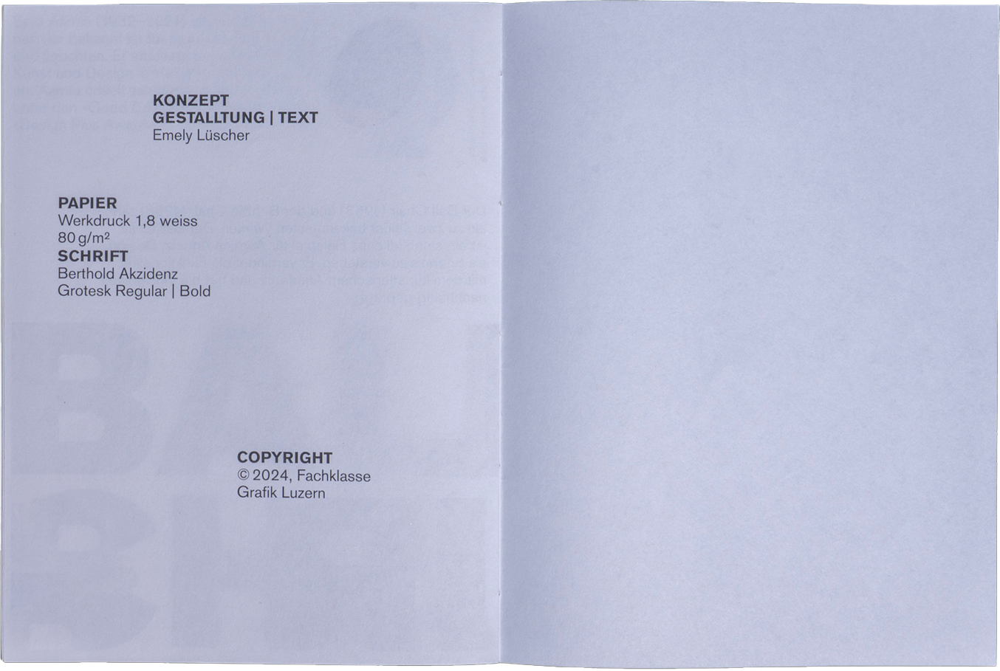
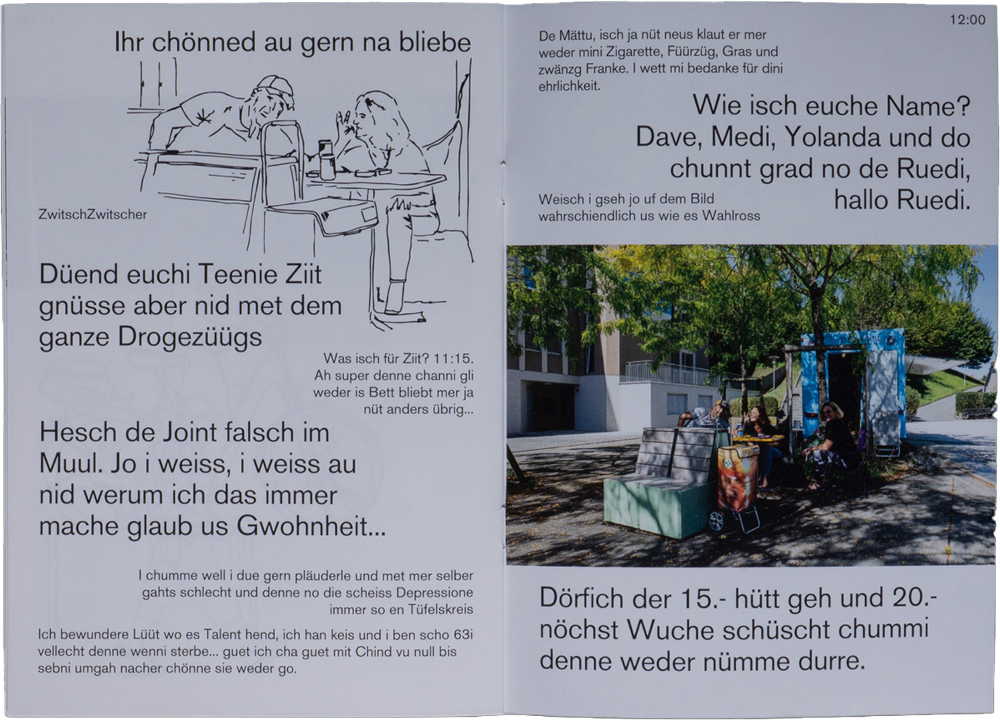
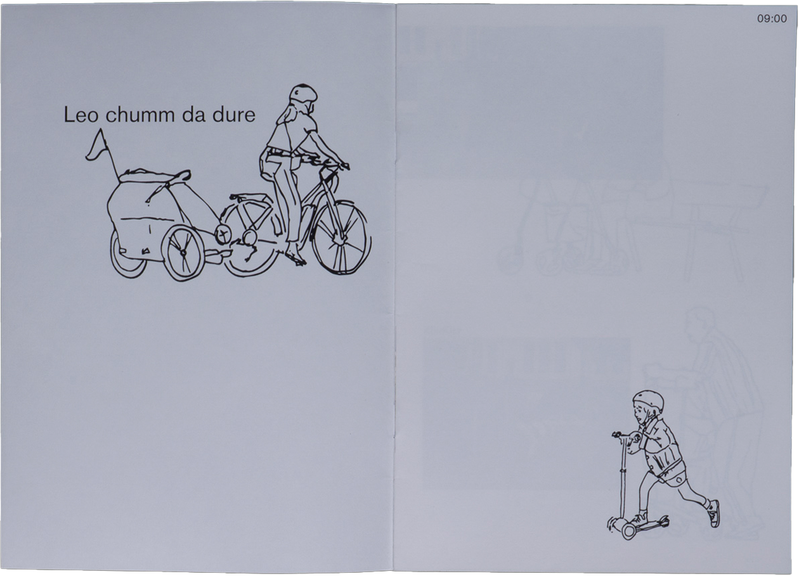
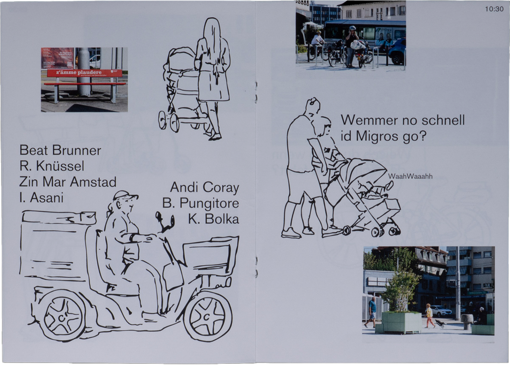

Ich bin Grafikerin in Ausbildung an der Fachklasse Grafik Luzern.

Paris Projekt | 2025
Vier Bröschüren, welche die Stimmung verschiedener Orte
des Palais Royal zeigen.



Design Objekte | 2024
Ausstellungskatalog über 3 Stühle aus dem
Vitra Design Museum.
 


Vorprojekt Paris | 2025
Vorprojekt in Emmenbrücke für das Paris Projekt

